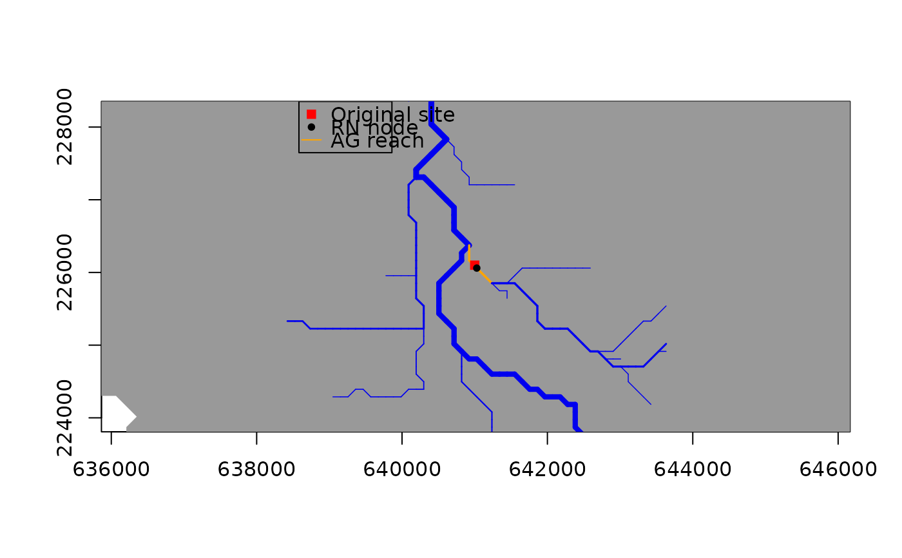

Get raster values at specific river locations
get_riverweight.RdGet values from a raster at specific locations in a river network. It can be used to
extract relevant values from upstream-averaged rasters as produced by rast_riverweight.
Usage
get_riverweight(x, rst, river, args_locate_site = list())Arguments
- x
Coordinate(s) of the location(s) of interest. These can be expressed as a 2-valued vector (indicating longitudinal and latitudinal coordinate of the single point of interest–in the same coordinate system as
rstandriver), a matrix or data frame (with two columns, for longitudinal and latitudinal coordinates, respectively, and as many rows as the number of points of interest). See examples.- rst
A
SpatRasterobject as obtained byrast_riverweight.- river
A
riverobject generated viaaggregate_river.- args_locate_site
List of arguments to be passed to
locate_site. See examples.
Value
A data frame with columns named after the layers of rst, and as many rows as the number of
rows in x.
Examples
data(wigger)
r1 <- terra::rast(system.file("extdata/landcover.tif", package = "rivnet"))
# legend: 1-urban; 2-agriculture; 3-forest; 4-improductive
r.exp <- rast_riverweight(r1, wigger)
v1 <- get_riverweight(c(641000, 226100), r.exp, wigger) # from vector
m <- matrix(c(641000, 226100), 1, 2)
v2 <- get_riverweight(m, r.exp, wigger) # from matrix
df <- data.frame(m)
v3 <- get_riverweight(df, r.exp, wigger) # from data frame
m2 <- matrix(c(641000, 226100, 639600, 226100), 2, 2, byrow = TRUE)
v4 <- get_riverweight(m2, r.exp , wigger) # from matrix multipoint
# \donttest{
# use showPlot = TRUE from locate_site to check snapping of point to the river network
v1 <- get_riverweight(c(641000, 226100), r.exp, wigger,
args_locate_site = list(showPlot = TRUE))

# }